第五章 一元一次方程（高效培优单元测试·强化卷）
第五章 一元一次方程（高效培优单元测试·强化卷）
（考试时间：120分钟 试卷满分：120分）
一、选择题（本大题共10小题，每小题3分，共30分）
1．下列方程中，是一元一次方程的是（ ）
A．
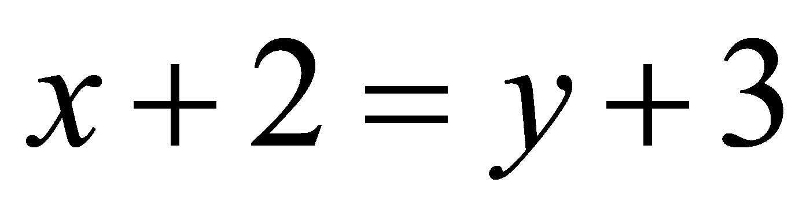
B． C．
C．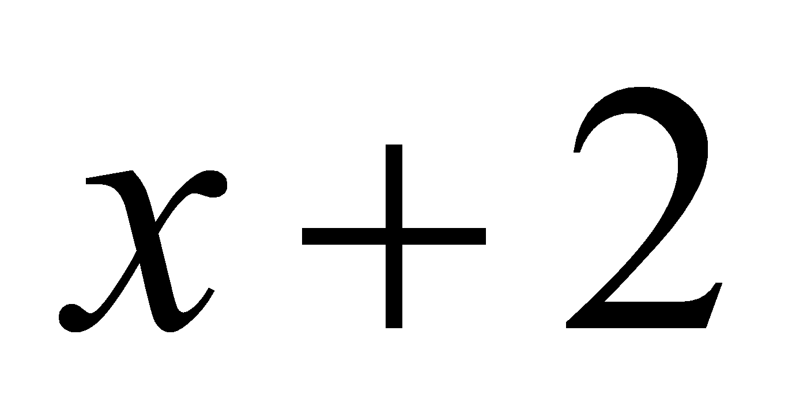
D．
2．下列运用等式的性质变形错误的是（ ）
A．若 ，则
，则 B．若
B．若 ，则
，则
C．若 ，则 D．若
，则 D．若
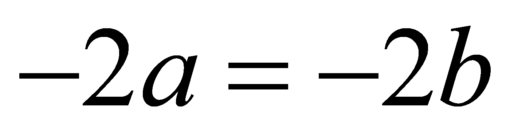
，则3．下列方程变形正确的是（ ）
A．由 移项，得
移项，得
B．由
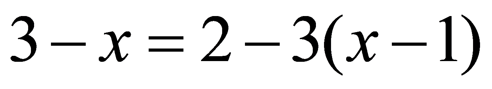
去括号，得
C．由 系数化为1，得
系数化为1，得
D．由 去分母，得
去分母，得
4．把方程
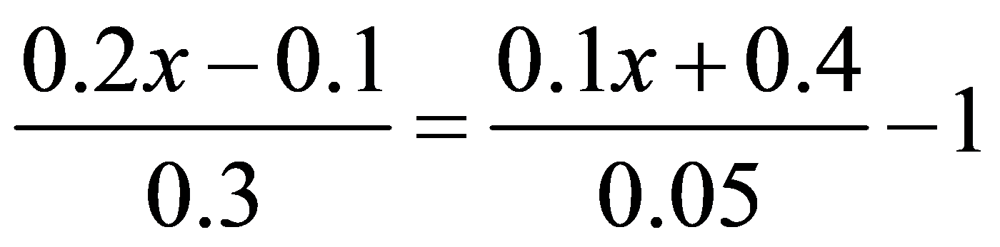
的分母化为整数，以下变形正确的是（ ）A．
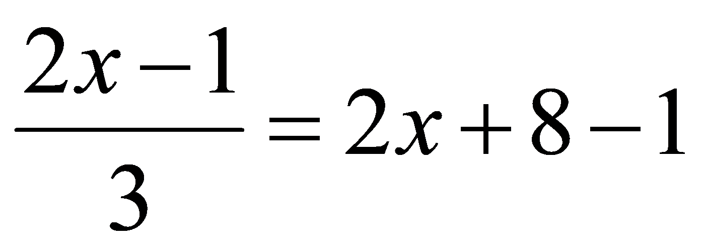
B．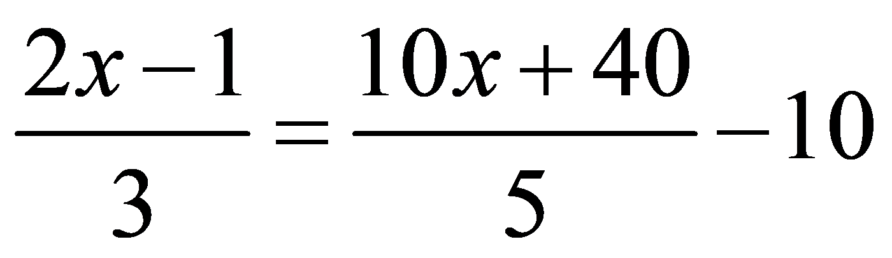
C． D．
D．
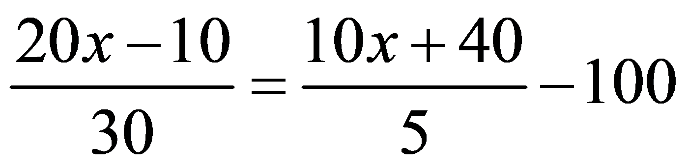
5．已知关于 的方程
的方程 与
与
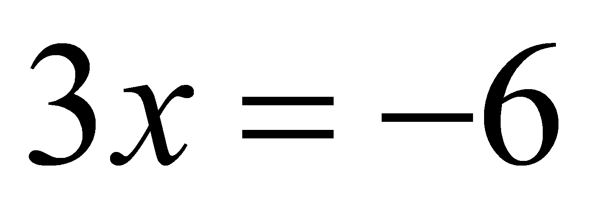
的解互为相反数，则 的值为（ ）
的值为（ ）A． B．
B． C．
C． D．
D．
6．对有理数 规定新运算“※”的意义是：
规定新运算“※”的意义是： ，则方程
，则方程
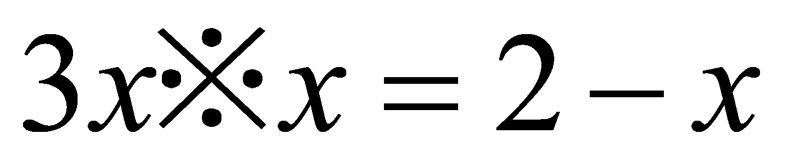
的解是 （ ）
（ ）A． B．3 C．
B．3 C． D．
D．
7．我国古代的数学著作《九章算术》中有这样一道题：“今有女子善织，日自倍，五日织五尺．问日织几何？”其大意为：一女子善于织布，每天织的布都是前一天的2倍，五天共织布五尺，问每天各织多少布？根据此问题中的已知条件，设第一天织布尺，根据题意可列方程（ ）
A．
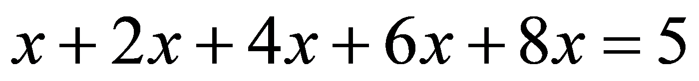
B．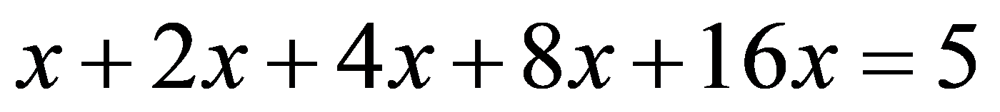
C． D．
D．
8．小明在解关于的方程 时，误将
时，误将 看成了
看成了
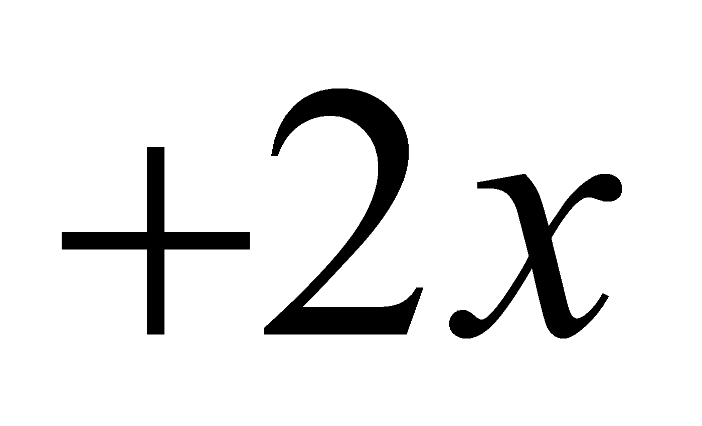
，得到的解为 ．请聪明的你帮小明算一算，方程正确的解为（ ）
．请聪明的你帮小明算一算，方程正确的解为（ ）A． B．
B． C．
C． D．
D．
9．在一个底面直径为6cm，高为9cm的圆柱形瓶内注水，使水柱的高为5cm，向瓶中放入一块长、宽、高分别为2cm，2cm，4cm的长方体铁块，则此时水柱的高为（ ）（ 取3）
取3）

A．
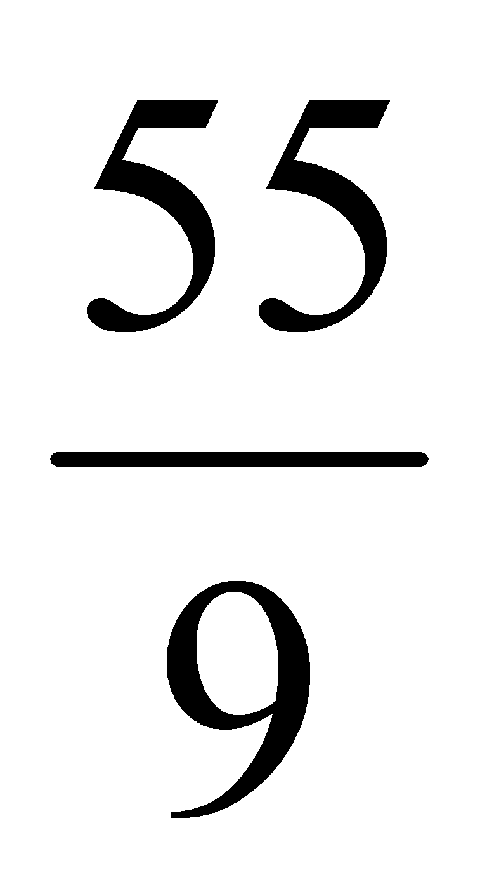
cm B． cm C．
cm C． cm D．
cm D．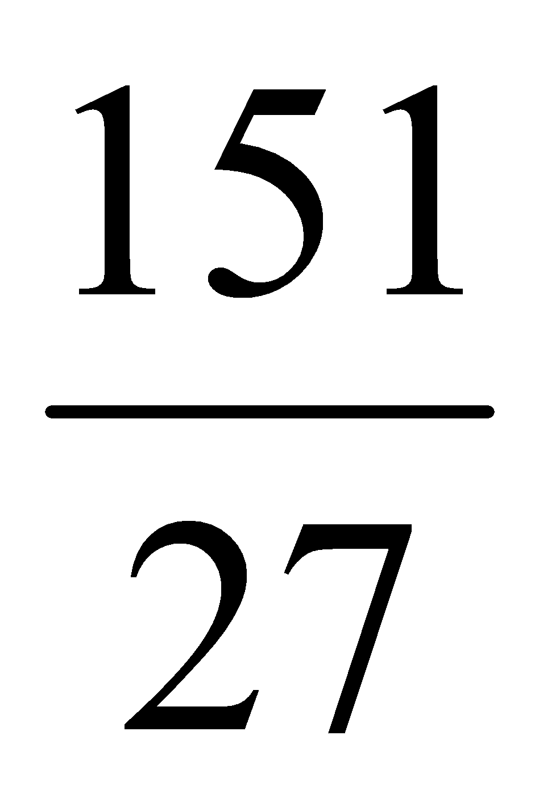
cm10．将九个数分别填在 （行列）的方格中，如果满足每个横行，每个竖列和每条对角线上的三个数之和都等于，则将这样的图称为“和幻方”如图①为“和
（行列）的方格中，如果满足每个横行，每个竖列和每条对角线上的三个数之和都等于，则将这样的图称为“和幻方”如图①为“和 幻方”，图②为“和
幻方”，图②为“和 幻方”，图③为“和
幻方”，图③为“和 幻方”，若图④为“和幻方”，则的值等于（ ）
幻方”，若图④为“和幻方”，则的值等于（ ）

A． B． C．
B． C． D．
D．
二、填空题（本大题共6小题，每小题3分，共18分）
11．当 时，式子
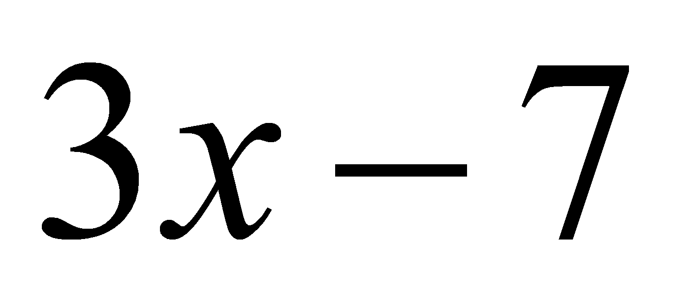
和 的值互为相反数．
的值互为相反数．12．若 是关于的一元一次方程，则的值为 ．
是关于的一元一次方程，则的值为 ．
13．如图，斜的三个数的和与横的三个数的和都是相等的，则 ．
．
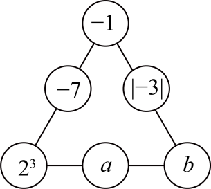
14．金牛区举办了“金教杯”校园足球超级联赛：比赛规则如下：胜一场得3分，平一场得1分，负一场得分．某校园足球队进行了9场比赛，其中负2场，共得13分，那么该足球队共胜了 场．
15．若关于的方程 的解为
的解为 ，则关于
，则关于 的方程
的方程 的解为 ．
的解为 ．
16．按下面的运算程序计算：
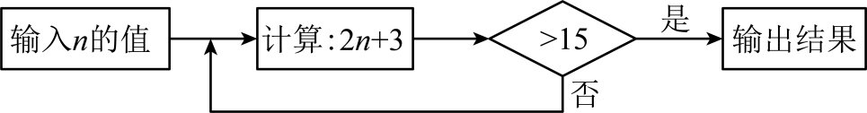
当输入
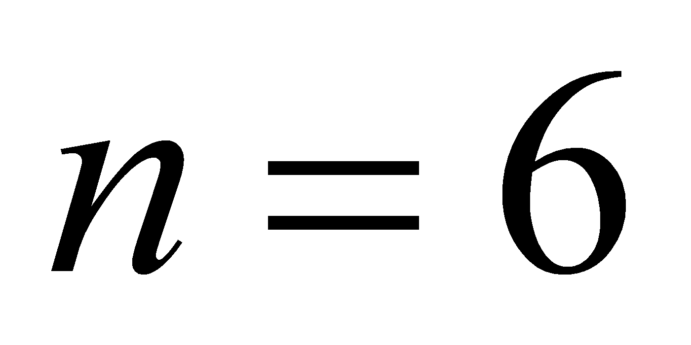
时，输出结果为33；当输入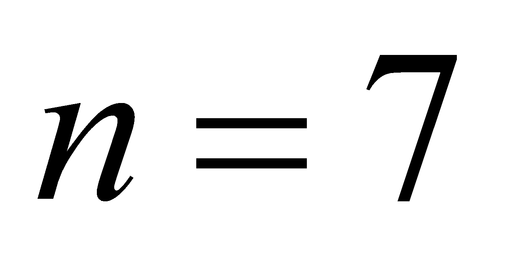
时，输出结果为17．如果输入 的值为正整数，输出的结果为25，那么满足条件的的值为 ．
的值为正整数，输出的结果为25，那么满足条件的的值为 ．三、解答题（第17，18，19，20题，每题6分；第21，22，23题，每题8分；第24，25题，每题12分；共9小题，共72分）
17．解方程：
(1) (2)
(2)
18．现定义一种新运算“☆”：对于任意有理数a，b，有 ．例如：
．例如： ．求
．求
(1) 的值；
的值；
(2)若 ，求x的值．
，求x的值．
19．如图，甲、乙两位同学在长方形的场地ABCD上绕着四周跑步，甲沿着A-D-C-B-A方向循环跑步，同时乙B-C-D-A-B方向循环跑步，
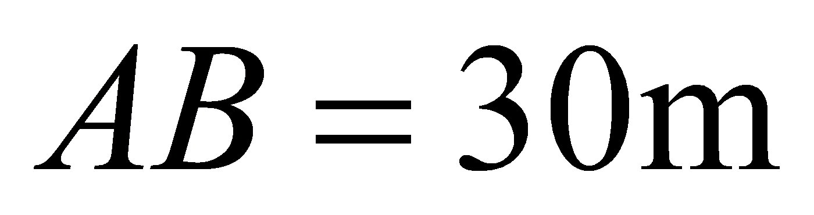
， ．若甲的速度为2m/s，乙的速度为3m/s．
．若甲的速度为2m/s，乙的速度为3m/s．
(1)当甲、乙两人第一次相遇时，求所经过的时间．
(2)若甲改为沿着A-B-C-D-A的方向循环跑步，而乙仍按原来的方向跑步，两人的速度不变，则经过多少秒乙追上甲？
20．若关于的一元一次方程 的解满足
的解满足 ，则称该方程为“友好方程”，例如：方程
，则称该方程为“友好方程”，例如：方程 的解为，而
的解为，而 ，则方程为“友好方程”．
，则方程为“友好方程”．
请根据“友好方程”定义，解决下列问题：
(1)① ，②
，②
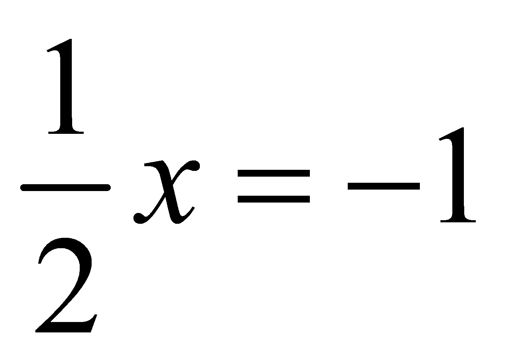
两个方程中为“友好方程”的是____________（填写序号）；(2)若关于的一元一次方程
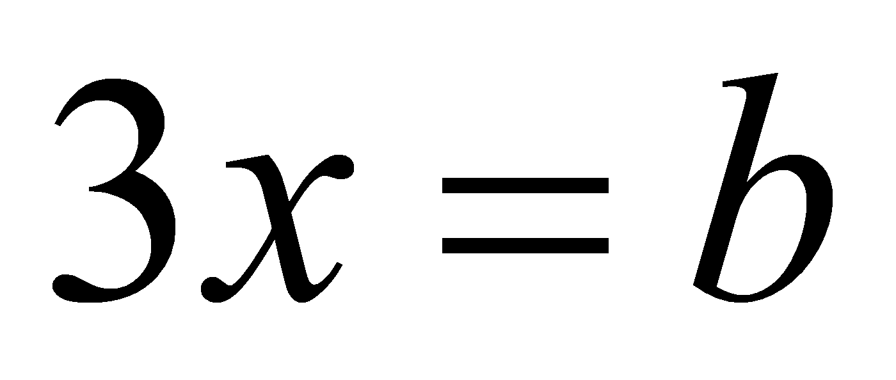
是“友好方程”，求 的值．
的值．21．如图，小明设计了一个计算程序．输入x值，由上面的一条运算路线从左至右逐步进行运算得到m，由下面的一条运算路线从左至右逐步进行运算得到n．如：输入，得到
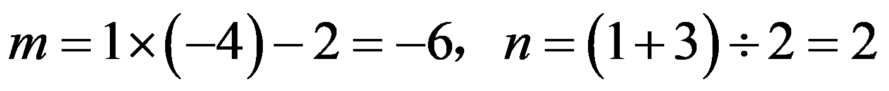
．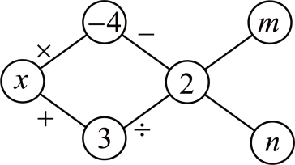
(1)若输入，则 ，
， ；
；
(2)若得到 ，求输入的x值及相应n的值；
，求输入的x值及相应n的值；
(3)若得到的m值比n值大1，求输入的x值．
22．七年级一班共有学生50人，其中男生人数比女生人数多6人，劳动技术课上，老师组织同学们自己动手设计制作便携式垃圾盒，每名学生一节课能做盒身12个或盒底26个．
(1)七年级一班有男生和女生各多少人？
(2)原计划女生负责做盒身，男生负责做盒底，每个盒身匹配2个盒底，那么这节课做出的盒身和盒底不能完全配套，最后决定男生去支援女生，问有多少名男生去支援女生，才能使这节课制作的盒身和盒底刚好配套．
23．观察下列三行数：
，2， ，8，
，8， ，32，…；①
，32，…；①
 ，4，
，4， ，16，
，16， ，64，…；②
，64，…；②
0，6，，18， ，66，…；③
，66，…；③
(1)第①行和第②行中的第8个数分别是________和________；
(2)设第①行中的第n个数是x，则第②行和第③行中对应的第n个数分别是________和________；
(3)取每行中的第n个数，这三个数的和能否等于 ？如果能，指出是每行中的第几个数；如果不能，请说明理由．
？如果能，指出是每行中的第几个数；如果不能，请说明理由．
24．商场经销的 两种商品，A种商品每件售价为60元，利润率为
两种商品，A种商品每件售价为60元，利润率为 ；
； 种商品每件进价为50元，售价为80元．
种商品每件进价为50元，售价为80元．
(1)A种商品每件进价为_______元，每件B种商品利润率为_______．
(2)商场同时购进两种商品共50件，售完之后恰好总利润为1300元，求购进A种商品多少件？
(3)在“春节”期间，该商场只对两种商品进行如下的优惠促销的活动：
打折前一次性购物总金额 | 优惠措施 |
少于等于400元 | 不优惠 |
超过400元，但不超过600元 | 按总售价打九折 |
超过600元 | 其中600元部分打八折优惠，超过600元的部分打七五折优惠 |
若小明两次购买商品分别付款360元和540元，若两次合并成一次性付款可以比两次购物分别付款节省多少元？
25．如图，已知数轴上依次有三点 ，点B对应的数是，且点到点
，点B对应的数是，且点到点 的距离均为10．
的距离均为10．
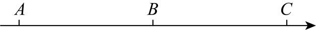
(1)写出点 所对应的数；
所对应的数；
(2)若动点 分别从
分别从 两点同时向右运动，点的速度分别为每秒3个单位长度和每秒1单位长度，问多少秒时点
两点同时向右运动，点的速度分别为每秒3个单位长度和每秒1单位长度，问多少秒时点 与点
与点 重合；
重合；
(3)若动点分别从两点相向而行，点运动2秒后，点才出发，点的速度分别为每秒3个单位长度和每秒1单位长度，问点运动多少秒时
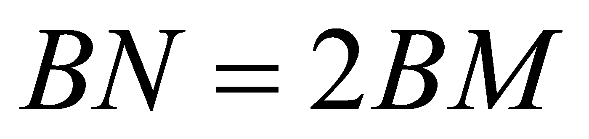
？